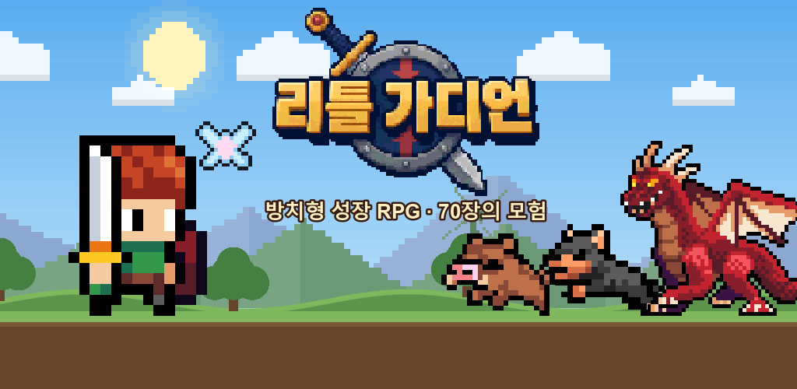
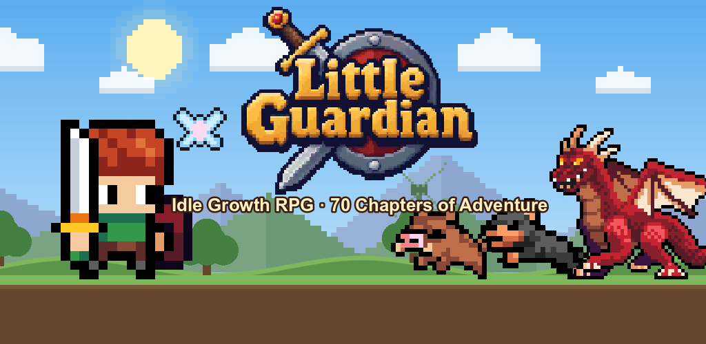
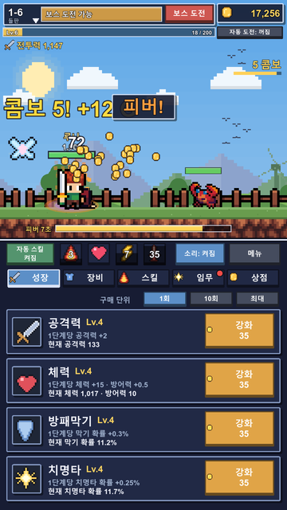
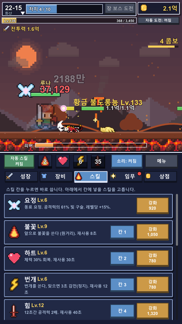
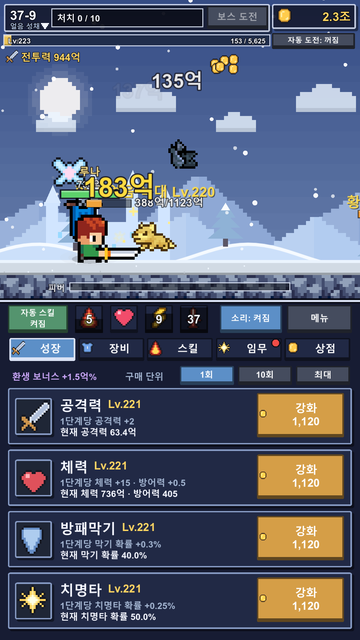
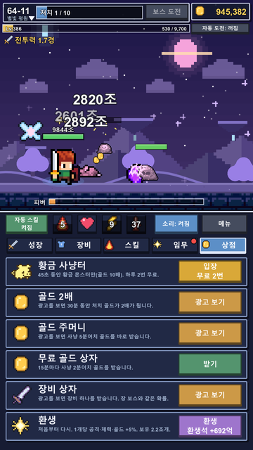
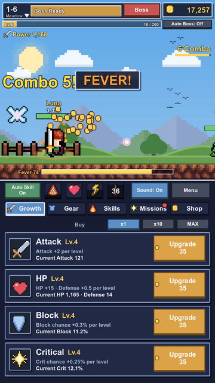
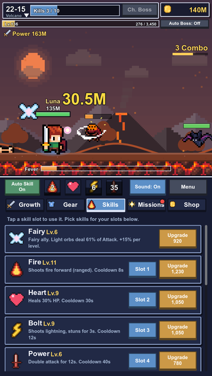
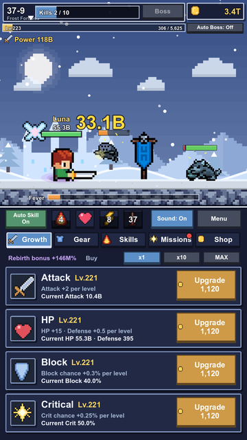
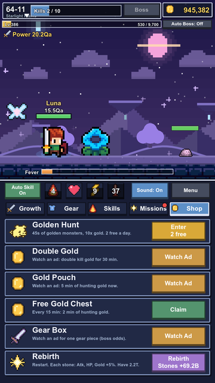

견습 기사를 키워 심연을 닫으세요. 70장 1,050스테이지의 픽셀 방치형 성장 RPG
Raise a little squire and seal the Abyss in a pixel idle RPG of 70 chapters.
Google Play에서 보기 Get it on Google Play







주인공이 스스로 싸우며 앞으로 나아가는 방치형 성장 RPG입니다. 골드를 모아 강화하고, 스킬과 장비를 갖추고, 보스에 도전할 때를 고르세요.
An idle growth RPG where your hero fights and advances on their own. Collect gold, upgrade, gear up with skills and equipment, and choose the right moment to challenge each boss.
주인공이 알아서 달리고 베며 사냥합니다. 화면을 누르면 추가 공격, 피버 게이지가 차면 골드가 쏟아집니다.
들판에서 화산, 하늘섬, 마왕성, 수정 동굴, 해저, 별빛 평원을 지나 심연까지. 23개 테마마다 배경과 몬스터가 다릅니다.
픽셀 몬스터와 얼음, 용암, 유령, 황금 등 색 변형 몬스터. 도감을 채우면 능력치가 오릅니다.
불꽃, 번개, 얼음, 회오리, 보호막 등 11가지 스킬. 무기, 갑옷, 반지는 일반부터 전설까지 5등급.
함께 싸우는 동료 요정. 벽에 막히면 환생해 환생석으로 공격력, 체력, 골드를 영구히 올리세요.
일일 임무와 업적, 황금 사냥터, 몬스터 무리 습격, 하늘을 날아가는 보물 상자.
Your hero runs, slashes, and hunts automatically. Tap for extra strikes and fill the Fever gauge to rain down gold.
From the meadows through volcanoes, sky isles, the Demon Castle, crystal caves, the deep sea, and starlight plains, down to the Abyss. 23 themes, each with its own scenery and monsters.
Pixel monsters plus frost, lava, ghost, golden, and more variants. Fill the Monster Book to boost your stats.
11 skills including Fire, Bolt, Ice, Wind, and Barrier. Weapons, armor, and rings in 5 grades from Common to Legendary.
A fairy companion fights by your side. Hit a wall? Rebirth for stones that permanently boost Attack, HP, and gold.
Daily missions and achievements, Golden Hunt, monster hordes, and treasure chests flying across the sky.
한국어와 영어를 지원합니다. 무료이며 광고가 포함되어 있습니다. 광고 보상은 선택 사항이며, 광고를 보지 않아도 끝까지 플레이할 수 있습니다. 계정 가입 없이 바로 시작하고, 진행 기록은 기기에 저장됩니다.
Available in English and Korean. Free to play with ads. Ad rewards are optional, and you can play to the end without watching any. No account needed; progress is saved on your device.